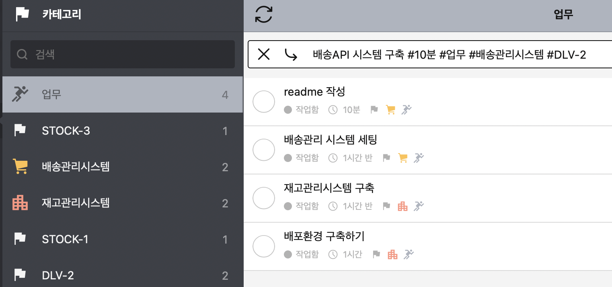

『목표를 이뤄내는 기술, To Do List』는 리디셀렉트를 둘러보다가 내 관심사인 To Do에 대한 책을 우연히 발견하게 되어 읽게됐다.
To Do List는 늘 문제다. 저자가 문제점이라고 보여주는 시스템의 대부분을 나도 경험 했었는데 저자의 단점 분석에 무척 공감한다. 써본 사람만이 느낄 수 있는 지적이자 분석이다. 아래는 저자가 정리한 To Do List 시스템의 분류다.
위 To Do List는 우선순위/맥락/중요도 등이 하나 이상 누락된 시스템이다. 저자가 기존의 시스템에 대해 이야기하고 비판하면서 마지막에는 본인이 제안하는 잘 쓰는 방법에 대해 이야기를 한다. 그것은 우선순위/맥락/중요도를 잘 정리하고, 업무를 쪼개고, 집중하는 것이다.
아래는 To Do List를 잘 쓰기 위한 저자의 제안으로 ‘궁극의 To Do List 작성법’이라고 표현했다. 표현은 오글거리지만 내용은 유용하다.
저자의 To Do List 제안을 보니 소프트웨어 개발과 유사하다는 생각을 했다. 최근에 커밋 메시지 주도 개발을 읽으며 내 업무에 도입해보고 싶다는 생각을 했는데, To Do List를 관리하는 것도 이와 유사하다는 생각이 들었다. To Do List와 커밋 메시지 주도 개발(Commit Message Driven Development, CDD)을 잘 엮으면 좋은 시스템을 만들 수 있을 것 같다.
우선 To Do List에서 프로젝트/작업의 범위를 줄이는 것은 하나의 Commit 단위를 만드는 것과 같다. 작업 범위를 줄이고, 그만큼만 작업해서 Commit하고, 다음 일을 진행한다. 미리 작업 범위를 정해야 다른 길로 새지않게 된다. 중간에 다른 일이 하고 싶어져도(리팩토링 등) 작업 범위가 아닌 것은 지금 진행하지 않는다.
기존 업무에서 JIRA 티켓이 큰 덩어리의 업무를 제공한다면, To Do List의 작업은 이를 하나의 맥락(태그카테고리)으로 묶고, 업무를 잘게 쪼개서 리스트에 추가한다. 업무는 커밋할 수 있는 단위로 나누면 커밋과 작업 완료를 함께 처리할 수 있다. 이렇게 완료한 업무는 그 자체로 완성이 되고, push and merge하면 하나의 맥락/티켓이 종료된다.
맥락은 장소/에너지원/프로젝트 등으로 구분하면 좋겠다. 업무 맥락에서는 프로젝트를 티켓번호로 정리하면 업무를 쉽게 분리할 수 있겠다. 예상 작업시간을 입력하되, 시간이 오래 걸리면 더 쪼갤 수 없는지 고민해본다. 사소한 일을 할 작업 항목을 추가로 만들어 그 안에서 사소한 내용을 처리할 수 있도록 한다.
각 작업에 대해 불렛저널은 ‘맥락을 알고 있으니 간단하게 쓰자’를 요구하는데, 저자는 ‘맥락을 쉽게 알기위해 자세히 쓰자’를 주장한다.
내가 사용하는 Nozbe.com에서 이 시스템을 아래와 같이 구성해봤다. 나는 맥락을 카테고리로 구분했다. 공통으로 사용할 업무 카테고리를 만들고, 업무 도메인으로 ‘배송관리시스템’과 ‘재고관리시스템’을 만들었다. 각 도메인의 티켓번호도 카테고리로 추가했다. 업무를 추가할 때는 카테고리와 소요시간을 정리한다. nozbe에서는 hashtag을 이용해 내용을 쉽게 입력할 수 있다. 배송API 시스템 구축 #10분 #업무 #배송관리시스템 #DLV-2 이렇게 입력하면 소요시간과 카테고리를 지정한 태스크를 쉽게 추가할 수 있다.

이렇게 구성한 후에 작업일을 오늘로 구성하면 그 작업은 오늘의 업무가 된다. 업무를 Commit 단위로 구성했고, 각 업무가 끝나면(Commit을 하면) 작업을 완료 처리한다. 카테고리의 모든 작업이 끝나면 push하면 된다.
코드를 작성할 때는 To Do List에 있는 작업을 커밋 메시지에 옮겨 적는다. 그리고 개발한다. 작업 범위를 제한했기에 쉽게 이탈하지 않는다. 작업이 완료되면 커밋 메시지를 다듬고 커밋한다(To Do List에 완료로 체크한다). 잠시 쉬었다가 List에 있는 다음 작업을 검토하고 진행한다.